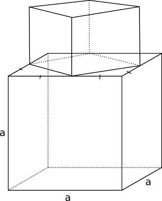

14. Kuben
Kuben är ett specialfall av rätblocket där alla sidor är lika långa. Det betyder att vi kan bestämma volymen som \( V=a^3 \) och totala arean som \( A=6a^2 \).

Exempel 1 Bestäm volymen för figuren som består av två kuber där den större kuben har sidan a.

Lösning
\( \begin{array}{lrcll} \textrm{Sidan i den mindre kuben:} & s^2 & = & (\dfrac{a}{2})^2+(\dfrac{a}{2})^2 & \textrm{} \\ \\ \textrm {} & & = & \dfrac{a^2}{4} +\dfrac{a^2}{4} & \textrm{} \\ \\ \textrm {} & & = & \dfrac{2a^2}{4}=\dfrac{a^2}{2} & \textrm{} \\ \\ \textrm {} & s & = & \dfrac{a}{\sqrt{2}} & \textrm{} \\ \\ \textrm {} & V & = & s^3 +a^3 = (\dfrac{a}{\sqrt{2}})^3 + a^3 = \dfrac{a^3+2\sqrt{2}a^3}{2\sqrt{2}} & \\ \end{array} \)
Uppgifter
- Rita på GeoGebra följande: Rita en kub och bilda mittpunkterna på kubens sidor genom att rita ut diagonalerna. Sammanbind mittpunkterna för kubens sidor. Vilken figur får vi?
Med hjälplinjer och punkter

och utan hjälplinjer

- Bestäm den totala arean för en kub vars volym är 8 dm3.
Sidan för längden är \( a = \sqrt[3]{V} = \sqrt[3]{8} = 2 \text{ dm} \).
Totala arean är \( A = 6a^2 = 6\cdot 2^2 = 24 \text{ dm}^2 \).
- En sexsidig tärning målas om. Sidan i träningen är 1,2 cm. Hur mycket målfärg behövs för två omgångar då 1 liter målfärg räcker till 8-10 m2?
Den totala arean för tärningen är \( 6 \cdot (1,2 \text{ cm} )^2 = 8,64 \text{ cm}^2 \).
Då den skall målas två gånger är totala arean 17,28 cm2.
8-10 m2/l betyder 800-1000 dm2/10 dl som är 80000-100000 cm2/100 cl, alltså 800-1000 cm2/1 cl.
Vi får \( \dfrac{17,28}{800} = 0,0216 cl \) och \( \dfrac{17,28}{1000} = 0,01728 cl \).
Alltså ca 0,02 cl som är samma som 0,2 ml. Det är mycket, mycket lite.
- Diagonalen för en kubs sida är \( 3\sqrt{2} \) lång. Bestäm volymen för kuben.
Vi kan lösa den med hjälp av Pythagoras eller Typtrianglar.
Pythagoras sats ger oss att \( s^2 + s^2 = (3\sqrt{2})^2 \). Sidan har längden \( s = 3\). Volymen är då \( V = s^3 = 3^3 = 27 \) v.e.
Genom att utnyttja Typtrianglarna får vi följande lösning:
Då diagonalen har längden \( 3\sqrt{2} \) är sidan 3 lång. Då är volymen \( 3^3 = 27 \) v.e.
- Sidan i en kub med längden \( a \) görs tre gånger längre.
- Hur många gånger större blir volymen?
\( 3^3 = 27 \)
- Hur många gånger längre blir rymddiagonalen?
Rymddiagonalen ändras lika mycket som sidan ändras. Alltså 3 gånger.
- Hur mycket ändras vinkeln mellan rymddiagonalen och ytan under rymddiagonalen?
Inte alls. Förhållandet mellan sidorna hålls samma.
- Hur många gånger större blir volymen?
- Bestäm längden av rymddiagonalen för en kub med sidan \( a \). Hur stor vinkel bildar rymddiagonalen med bottenytan?
Vi får att rymddiagonalen \( d = \sqrt{a^2 + a^2 + a^2} = a\sqrt{3} \).
Vi får \( \cos \alpha = \dfrac{a \sqrt{2}}{a\sqrt{3}} \Leftrightarrow \alpha = 35,26^{\circ} \).